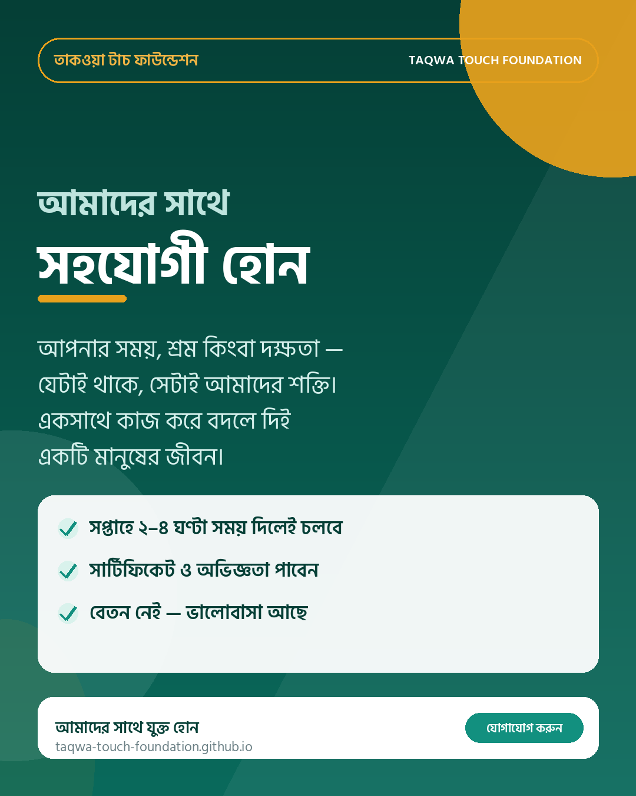
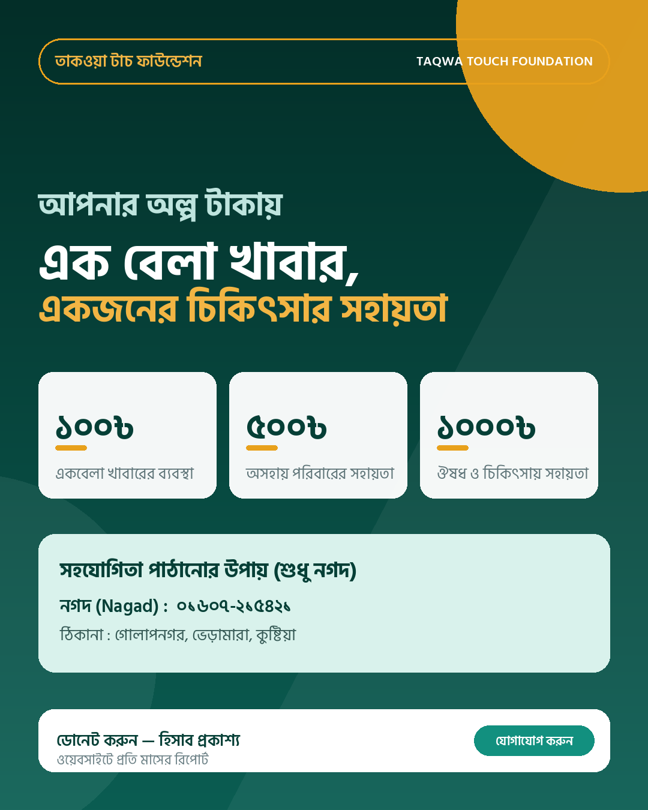
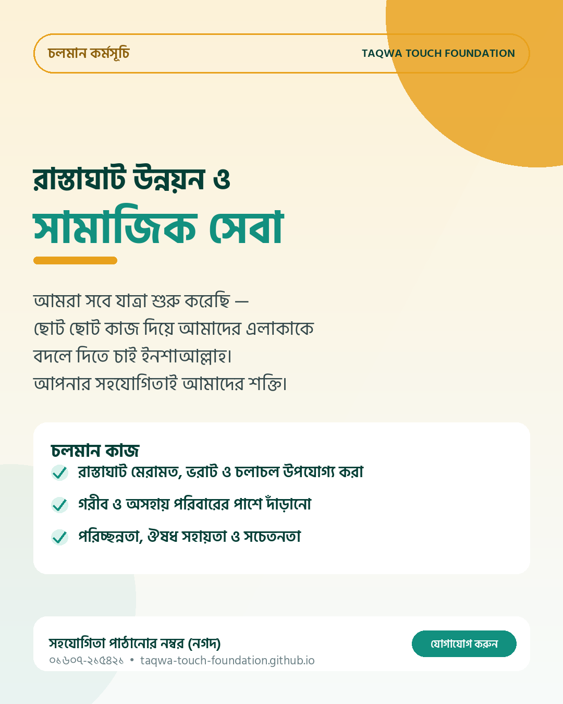
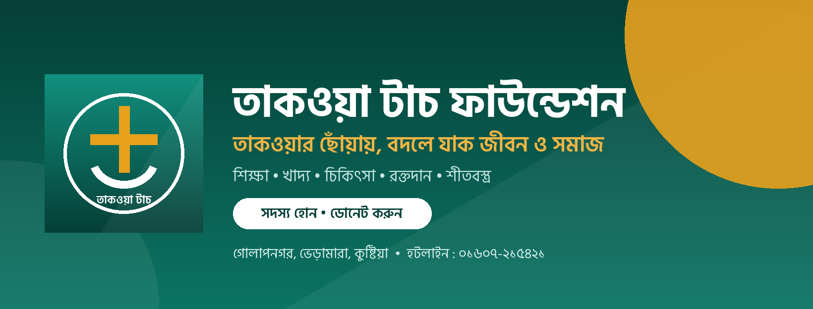
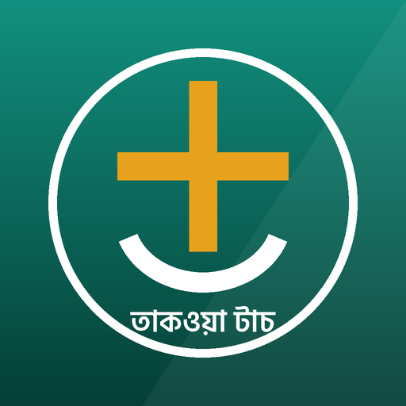

১। ডিজাইন অ্যাসেট (ডাউনলোড করে ব্যবহার করুন)

পোস্টার ১ — সহযোগী হোন
১০৮০×১৩৫০ • ফেসবুক পোস্ট / স্টোরি
ডাউনলোড

পোস্টার ২ — ডোনেশন
১০৮০×১৩৫০ • দান আহ্বানের জন্য
ডাউনলোড

পোস্টার ৩ — সামাজিক সেবা
১০৮০×১৩৫০ • চলমান কাজ ও সহযোগিতা
ডাউনলোড

ফেসবুক কভার
১৬৪০×৬২৪ • পেজের কভার ফটো
ডাউনলোড

প্রোফাইল ছবি
৫১২×৫১২ • ফেসবুক/ইউটিউব/হোয়াটসঅ্যাপ
ডাউনলোড
২। ৩০ দিনের প্রচারণা প্ল্যান
- দিন ১–৩ (ভিত): পেজ সাজানো, লোগো-কভার বসানো, পinned পরিচিতি পোস্ট, সদস্যদের নিয়ে গ্রুপ।
- দিন ৪–১০ (পরিচিতি): প্রতিদিন ১টি পোস্ট — ৬টি কাজের পরিচয়, রক্তদাতা নিবন্ধন, মাঠের ছবি/রিল।
- দিন ১১–২০ (আস্থা): খরচের হিসাব, উপকারভোগীর গল্প, লাইভ ভিডিও, প্রশ্ন-উত্তর।
- দিন ২১–২৫ (সহযোগিতা): চলমান কাজের আপডেট + নগদে সহযোগিতা আহ্বান, দাতাদের ধন্যবাদ।
- দিন ২৬–৩০ (ছড়ানো): স্থানীয় শিক্ষক-ইমাম-ব্যবসায়ী, কলেজ প্রতিনিধি, হোয়াটসঅ্যাপ ব্রডকাস্ট, মাসিক রিপোর্ট।
👉 বিস্তারিত (প্রতিদিনের রুটিন, পোস্টের সময়, হ্যাশট্যাগ, মাপকাঠি): promotion-plan.md
৩। রেডি ক্যাপশন
১০টি তৈরি করা ক্যাপশন — শুধু কপি করে ছবি বদলে পোস্ট করুন। ভেতরে আছে: পরিচিতি, শিক্ষা, খাদ্য, রক্তদান, স্বচ্ছতা, ক্যাম্পেইন ঘোষণা, উপকারভোগীর গল্প, স্বেচ্ছাসেবক আহ্বান, কৃতজ্ঞতা ও মিডিয়া পোস্ট।
👉 সব ক্যাপশন: facebook-posts.md
৪। পোস্টারের লেখা বদলাতে চান?
পোস্টারের টেক্সট/নম্বর বদলাতে হলে posters/make_posters.py ফাইলের লেখা এডিট করে আবার চালান — নতুন পোস্টার তৈরি হয়ে যাবে:
cd posters
python3 make_posters.py